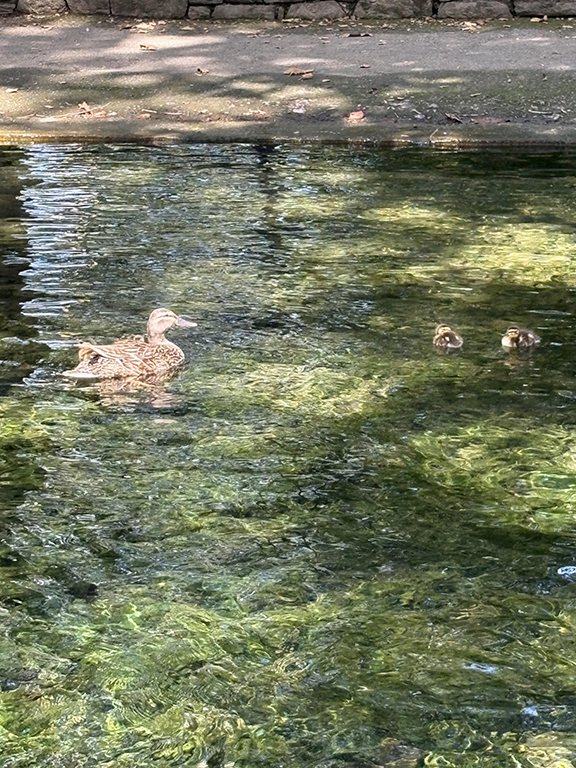

Ducks are birds that belong to the family Anatidae. They are related to swans and geese, which are in the same family. Ducks are usually smaller than swans and geese and have shorter necks. Ducks are water birds with webbed feet for swimming, flat bills for eating, and waterproof feathers to stay warm and dry. They are omnivores, eating plants, seeds, and small insects, and can be found in wetlands all over the world. Male ducks are called drakes and often have colorful feathers, while females are called hens and have plainer feathers for camouflage. Baby ducks are called ducklings, and they are born with a strong instinct to follow their mothers.
·No Cold Feet: Ducks' webbed feet lack nerves and blood vessels, allowing them to walk on ice and endure cold water without feeling the chill.
·Waterproof Feathers: Their specialized feathers are coated with oil, making them waterproof and keeping the duck buoyant.
·Triple Eyelids: Ducks have three eyelids, a feature that helps protect their eyes, particularly underwater, while also allowing them to see in color and have better vision than humans.
·Unihemispheric Sleep: Ducks can sleep with one eye open and half of their brain awake, a phenomenon known as "unihemispheric sleep," to remain aware of predators.
I took this picture of a mama duck and her two little ducklings this summer! •ᴗ•
